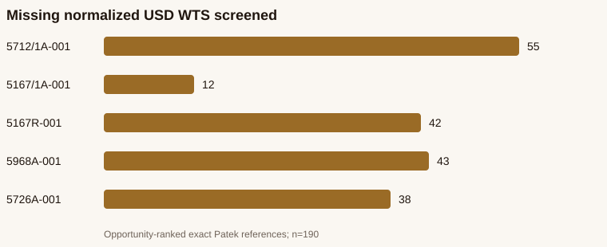

WATCHFACTS Phase 6A — Patek Philippe Second-Brand Pilot
BLOCKED_NO_SAFE_COHORT — 0 of 190 screened rows satisfy the unchanged SAFE contract.
Technical summary
The read-only census found 126,571 active Patek staging listings. Parser-v5 screened 190 immutable, single-watch WTS rows with missing normalized USD across five opportunity-ranked exact references and found 0 SAFE, 162 REVIEW, and 28 UNRESOLVED. No production canary is authorized.
126,571active staging listings
72,333normalized USD prices
419represented safe references
370analytics-ready references
Key finding

All 190 screened rows have exact immutable raw-version matches. None satisfies the unchanged SAFE price contract.
Five pilot references and Price Research parity
| Reference | Model | Active | WTS | WTB | TF | PR source | PR qualified | Screened | SAFE | REVIEW | UNRESOLVED |
|---|---|---|---|---|---|---|---|---|---|---|---|
| 5712/1A-001 | Nautilus | 247 | 223 | 24 | 247 | 223 | 168 | 55 | 0 | 46 | 9 |
| 5167/1A-001 | Aquanaut | 58 | 53 | 5 | 58 | 53 | 41 | 12 | 0 | 12 | 0 |
| 5167R-001 | Aquanaut | 245 | 201 | 44 | 245 | 201 | 159 | 42 | 0 | 38 | 4 |
| 5968A-001 | Aquanaut | 153 | 121 | 32 | 153 | 121 | 78 | 43 | 0 | 40 | 3 |
| 5726A-001 | Nautilus | 183 | 165 | 18 | 183 | 165 | 127 | 38 | 0 | 26 | 12 |
Shadow parser result
| Classification | Count |
|---|---|
| SAFE_EXPLICIT_USD | 0 |
| SAFE_EXPLICIT_USDT | 0 |
| SAFE_VERIFIED_FX | 0 |
| REVIEW_CURRENCY | 137 |
| REVIEW_MULTIPLE_PRICE | 19 |
| REVIEW_BUNDLE | 6 |
| UNRESOLVED | 28 |
Rolex vs Patek
| Metric | Patek | Patek rate | Rolex | Rolex rate |
|---|---|---|---|---|
| Explicit-currency rate | 16 | 8.42% | UNKNOWN | UNKNOWN |
| Parser AUTO_APPROVED rate | 2 | 1.05% | 408 | 4.37% |
| Review-required rate | 162 | 85.26% | 7001 | 75.01% |
| Unresolved rate | 28 | 14.74% | 2332 | 24.99% |
| Multiple-price rate | 19 | 10% | 114 | 1.22% |
| Bundle rate | 6 | 3.16% | 110 | 1.18% |
| FX-blocked rate | 2 | 1.05% | 408 | 4.37% |
| Safe WTS recovery rate | 0 | 0% | 0 | 0% |
Directional comparison only: the cohorts are not population-matched. Rolex explicit-currency rate remains UNKNOWN and was not inferred.
Safeguards
- Production writes: 0
- Raw-message mutations: 0
- UI/UX changes: 0
- Temporary private raw input retained: no
- Rolex evidence contract relaxed: no
Recommendation
Keep Patek automatic WTS correction blocked. A future canary requires 10–25 genuinely SAFE rows, preferably across at least two exact references. Current proposed cohort: 0 rows.